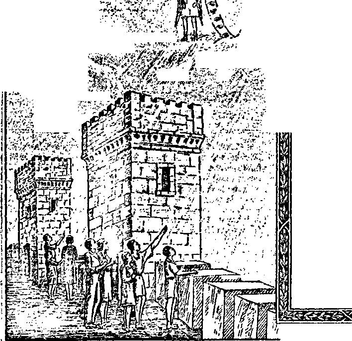

ft
. v . “! »H5J? ?
:;J^'
M ■ V*jbe
■-V'"
■/'V
(Itici lleralcl of (Jjjrwfe fungaotn
-■£<
ijWjSl&irtfs r-
%>X*57t?. -v.'V
/i
'.V/7//7'
4 "y »• •' v 4 »-• A.; ,
"They shall know that I am Jehovah.
’Ewkie) 35;&
Vol. LX Semimonthly
JANUARY 15. 1939
CONTENTS
“Government and Peace”..........
Religion Organized ..................
The Kingdom .............................
Redemption .................................
For His Name ...........................
Satan ...........................................
The Monstrosity .........................
Princes ...........................................
Vindicator .....................................
Letters ...........................................
Field Experiences.......................
“Lovers of Righteousness” .....
“Watchtower” Campaign...........
Correction .....................................
“Watchtower” Studies .............
Year Book for 1939 ...................
1939 Calendar...............................
No. 2
19
21
22
23
24
25
26
28
29
31
32
18 18
18
18
31
31
■M
©WTB. & IS.
r- ’**- ,*< f-r •—r < b " < ><***^- * 0 ’ - — •>• -•*'- m t •** ’ ** - . *■ . w • - * <*• ■*» *• •“ t ' *•- -»•••« ■*-' * r~ ~T .r - •*.- ' •" r • < * “ “ “ '•* ’
Published Semimonthly By
WATCH TOWER BIBLE & TRACT SOCIETY 117 Adams Street - • Brooklyn, N.Y., U.S.A.
OFFICERS
J. F. Rutherford, President W. E. Van Amburgh, Secretary “And all thy children shall be taught of Jehovah; and great shall be the peace of thy children.” - Isaiah 34:13.
THE SCRIPTURES CLEARLY TEACH
THAT JEHOVAH is the only true God, is from everlasting to everlasting, the Maker of heaven and earth and the Giver of life to his creatures; that the Logos was the beginning of his creation, and his active agent in the creation of all things; that the Logos Is now the Lord Jesus Christ in glory, clothed with all power in heaven and earth, and the Chief Executive. Officer of Jehovah.
THAT GOD created the earth for man, created perfect man for the earth and placed him upon it; that man willfully disobeyed God’s law and was sentenced to death; that by reason of Adam’s wrong act all men are born sinners and without the right to life.
THAT JESUS was made human, and the man Jesus suffered death in order to produce the ransom or redemptive price for obedient ones of mankind; that God raised up Jesus divine and exalted him to heaven above every creature and above every name and clothed him with all power and authority.
THAT JEHOVAH’S ORGANIZATION is a Theocracy called Zion, and that Christ Jesus is the Chief Officer thereof and is the rightful King of the world; that the anointed and faithful followers of Christ Jesus are children of Zion, members of Jehovah’s organization, and are his witnesses whose duty and privilege it is to testify to the supremacy of Jehovah, declare his purposes toward mankind as expressed tn the Bible, and to bear the fruits of the kingdom before all who will hear.
THAT THE WORLD has ended, and the Lord Jesus Christ has been placed by Jehovah upon his throne of authority, has ousted Satan from heaven and is proceeding to the establishment of God’s kingdom on earth.
THAT THE RELIEF and blessings of the peoples of earth can come only by and through Jehovah’s kingdom under Christ, which has now begun; that the Lord’s next great act is the destruction of Satan’s organization and the establishment of righteousness in the earth, and that under the kingdom the people of good will that survive Armageddon shall carry out the divine mandate to “fill the earth” with a righteous race.
ITS MISSION
THIS journal Is published for the purpose of enabling the people to know Jehovah God and his purposes as expressed in the Bible. It publishes Bible Instruction specifically designed to aid Jehovah’s witnesses and all people of good will. It arranges systematic Bible study for Its readers and the Society supplies other literature to aid in such studies. It publishes suitable material for radio broadcasting and for other means of public instruction in the Scriptures.
It adheres strictly to the Bible as authority for Its utterances. It is entirely free and separate from all religion, parties, sects or other worldly organizations. It Is wholly and without reservation for the kingdom of Jehovah God under Christ his beloved King. It is not dogmatic, but invites careful and critical examination of Its contents in the light of the Scriptures. It does not Indulge In controversy, and Its columns are not open to personalities.
Yearly Subscription Price
United States, *1.00; Canada and Miscellaneous Foreign, *1.50; Great Britain, Australasia, and South Africa, 6s. American remittances should be made by Postal or Express Money Order or by Bank Draft Canadian, British, South African and Australasian remittances should be made direct to the respective branch offices. Remittances from countries other than those mentioned may be made to the Brooklyn office, but by International Postal Money Order only.
Foreign Offices
British .........„........................... 34 Craven Terrace, London, W.2, England
Canadian................................40 Irwin Avenue, Toronto 5, Ontario, Canada
Australasian.................... 7 Beresford Road, Strathfield. N. S. W., Australia
South African ................................Boston House, Cape Town, South Africa
Please address the Society In every case.
(Translations of this journal appear in several languages.)
All sincere students of the Bible who by reason of infirmity, poverty or adversity are unable to pay the subscription price may have The Watchtower free upon written application to the publishers, made once each year, stating the reason for so requesting it. We are glad to thus aid the needy, but the written application once each year is required by the postal regulations.
Notice to Subscribers: Acknowledgment of a new or a renewal subscription will be sent only when requested. Change of address, when requested, may be expected to appear on address label within one month. A renewal blank (carrying notice of expiration) will be sent with the journal one month before the subscription expires.
Entered as second-class matter at the post office at Brooklyn, N. T., under the Act of March 3, 1879.
“LOVERS OF RIGHTEOUSNESS”
This name designates the testimony period which will occupy the entire month of February. Those of Jehovah’s anointed remnant and their companions, foreshadowed by David and Jonathan, being lovers of righteousness of God, will rejoice to make special efforts during this period to devote more time and energy to the Watchtower Campaign, as announced below and which includes the month of February. More time and effort in the field, or a new start into the field, as a kingdom publisher, will require special planning on your part. If you desire to become a publisher, get in touch with our local organization or direct with this office.
“WATCHTOWER” CAMPAIGN
Four full months of 1939, January to April inclusive, have been set aside for the biggest, if not most important, yet of the campaigns to publish Jehovah’s kingdom. It is designated the “Watchtower” campaign because of the special offer made, agreeable to arrangements of the Society, to wit, a full year’s subscription for the magazine The Watchtower together with the book Enemies or any other one desired of the bound book series and a copy of the new booklet Face the Facts, on a contribution of but $1.00. This is now the offer in every language in which The Watchtower appears; hence this four-month campaign is both an international and a world-wide one. Every reader of The Watchtower who appreciates its real value and the dire need of all people of good will today for its spiritual food will without urging desire to take part in this campaign. If not already in touch with the Society’s service organization, write this office and make arrangements for the campaign. A monthly report will be expected of each publisher. Consult the Informant for all details hereon.
CORRECTION
In the December 1, 1938, issue of The Watchtower, page 364, in the article “Kingdom Activities”, the expression “strange aet” in paragraph 1, line 5, should read “strange work”.
“WATCHTOWER” STUDIES
Week of February 19: “Government and Peace,”
fl 1-25 inclusive, The Watchtower January 15, 1939.
Week of February 26: “Government and Peace,”
fl 26-46 inclusive, The Watchtower January 15, 1939.
Vol. LX
January 15, 1939
No. 2
"Of the increase of his government and peace there shall be no end."—Isa. 9:7.
TEHOVAH, knowing the end from the beginning, I long centuries ago caused his prophetic Word J to be recorded and, among other things, declared that in his own due time he would set up a government on the earth and under that government there shall be peace and that neither the government nor peace shall ever end. Since the recording of that prophecy many centuries have come and gone and today there is no peace on the earth. For that reason we may know that God’s promised government is not fully in operation so far as the present rule of the earth is concerned. Every nation of earth is now the victim of morbid fear. There is internal dissension, bitterness and strife amongst the people. Many nations are actually at war, and violence and wickedness reign in every part of the earth. All the nations and the people are in distress and perplexity. The masses of the people see no hope for future peace and prosperity. They are discouraged and in despair, and yet if such persons would give heed to the truth their fears would disappear and their despair pass away, and in the place thereof would come peace of mind and joy of heart. The time is here when the people of good will toward God shall receive instruction, and Jehovah has graciously provided that such persons shall be enlightened, that they may lift up their heads now and rejoice, seeing the day of deliverance is near.
* Jehovah God has not forgotten his promise, and his prophecies have not failed in the least. His due time must arrive before his promises are carried out; and having purposed to establish a government and peace, he is certain to do that very thing. No one who believes on God and Christ Jesus, and who has a knowledge of the Bible, will have any doubt about that.
• At this stage of world distress faithful persons should be completely convinced that there is no government amongst men that gives promise of lasting peace. There is no one statesman on the earth who can lead the people into conditions that are desirable. There is no commercial or religious institution that can relieve the people of fear, trepidation and strife. In the present world there is no hope. It is time to turn to the Word of the Almighty God and learn what he says, and give heed thereto. To the people he now says: “Behold, my servant whom I have chosen; my beloved in whom my soul is well pleased. ... In his name shall the [nations] hope.” (Matt. 12:18-21, A.R.P.) Persons of good will are the ones who will now give heed to the Word of God and turn their heads in the right way, because it is God’s time for them to do so. Knowledge and understanding of the Bible will now give consolation and hope to those in distress and who desire righteousness and peace.
4 Foreknowing his purpose to send his beloved Son to earth and make him the King, Jehovah caused his prophet to write of the matter long ago as though that great event had already come to pass, and to record the admirable and marvelous things the King shall accomplish; and hence the prophet wrote: “For unto us a child is born, unto us a son is given, and the government shall be upon his shoulder; and his name shall be called Wonderful Counsellor, The mighty God, The everlasting Father, The Prince of Peace. Of the increase of his government and peace there shall be no end.”—Isa. 9:6,7.
“ Having given his word of promise, God will perform it; and that the faith and hope of all persons of good will towards him might be strong, Jehovah furthermore caused his same prophet to record these words: “Remember the former things of old: for I am God, and there is none else; I am God, and there is none like me. Declaring the end from the beginning, and from ancient times the things that are not yet done, saying, My counsel shall stand, and I will do all my pleasure: calling a ravenous bird from the east, the man that executeth my counsel from a far country: yea, I have spoken it, I will also bring it to pass; I have purposed it, I will also do it.” (Isa. 46:9-11) The setting up of his “government and peace”, and which will continue forever, will completely fill every longing and sincere heart with joy. Shall such government be realized? It is absolutely certain.
•After the recording of the prophecy by Isaiah concerning the King as then stated, many more long centuries came and passed away, and only a few persons on the earth during those centuries have looked for and hoped for the coming of that kingdom. Among those who had faith in God and hope were a little company of sheepherders watching their flocks near Bethlehem, and who were graciously permitted to be Jehovah’s witnesses to the marvelous evidence of the birth of the Son about whom the prophet had before made record. To those faithful men Jehovah sent his angel who announced the birth of the “Saviour, which is Christ the Lord”. Immediately the angelic host proclaimed this message of gladness in the hearing of those witnesses: “Glory to God in the highest, and on earth peace, good will toward men.” (Luke 2:14) What is known as the “King James” or Authorized Version of the Bible does not render the above text as it should be; and evidently this was permitted of the Lord for a purpose until his due time to make it clearly understood. The correct rendering of that text is this: “Glory in the highest unto God! and on earth peace, among men of good-will.” {Rotherham) This definitely and consistently settles the matter that those who will enjoy that “government and peace” are the men who are of good will toward God. All such must and will believe that Jehovah is the Almighty God; that Christ Jesus is the King, and that his kingdom is the hope of humankind. There are many persons who claim to believe the Bible as God’s Word who do not have and enjoy peace. Many such are at enmity with one another, and are also viciously persecuting those who are wholly devoted to God and his kingdom. What is the reason? Is it because the Bible is confusing and not understandable? No, that is not the reason. The correct answer and proper understanding of that matter will aid all sincere persons to appreciate the Lord’s gracious provision. What follows herein constitutes the answer found in God’s Word, and is therefore the correct answer.
T There are two powers which are active, and which are unalterably opposed to each other: the one, which is supreme, enlightens the minds of men of good will; the other deceives men, blinds their minds to the truth, and causes them to pursue a wrongful course. The supreme, righteous One is the Almighty God, whose name is Jehovah. The opposing one or enemy of God is named Satan, the Devil. Jehovah is the God of peace. Satan is the mighty one of strife. Mark this: that the message brought to the men by the heavenly host, as above stated, says, “On earth peace among men of good will.’’ That means that only those who are of good will toward God can find and enjoy everlasting peace. The purpose of what is here written is to give a plain statement of the facts and the Scriptures in order to help persons of good will to learn the right way. What is here said is not the opinion of man, nor man’s interpretation of the Scriptures. Jehovah’s Word is the authority, and He is his own interpreter. The Scriptures cannot be properly interpreted by any man.
8 God the Almighty is the Creator of heaven and earth, which together constitute the world, and the world belongs to Jehovah, as it is written: “The earth is the Lord’s, and the fulness thereof; the world, and they that dwell therein.” (Ps. 24:1) “The heavens are thine, the earth also is thine; as for the world, and the fulness thereof, thou hast founded them.” (Ps. 89:11) God created the earth and created the perfect man to live forever on the earth. (Isa. 45:12,18) God gave man the rule over the lower animal creation, and he made Lucifer, the heavenly creature, the overlord of man. (Gen. 1:26; Ezek. 28:14; Isa. 14:12-17) All creation then dwelt together in peace and praised the Almighty God. Lucifer coveted that praise, desiring it for himself (Jer. 51:13), and hence he rebelled against Jehovah. Many of the angels of heaven and the perfect man Adam joined in that rebellion. God changed the name of Lucifer, giving him four names, to wit: Dragon, Satan, Serpent, and Devil. Satan then challenged Jehovah God to put men on the earth who would remain true and faithful to God. The rebellious Satan was sentenced to death; but in order that all creation might in due time know that Jehovah is supreme, and that his power is without limitation, and that Satan would have an opportunity to prove his challenge, God suspended the sentence of death and permitted Satan to continue to live for a specified period of time, at the end of which time God will execute Satan. Therefore God said to Satan : “But for this cause have I allowed thee to remain, in order to show thee my power; and in order that they may proclaim my name throughout all the earth.”—Exod. 9:16, Leeser.
8 Jehovah God also gave his word of promise that in his due time he will set up a government that will rule the people in righteousness, and in which there will be everlasting peace on earth, and that such government of righteousness will be administered by Christ Jesus. A long period of time elapsed between the date of God’s promise and the setting up of his government of righteousness, in which period of time Satan the Devil has full opportunity to make proof of his wicked challenge. If Satan should succeed in turning all men against God, that would prove that Satan is equal to Jehovah God, or even greater, and that Jehovah is not supreme. If Satan fails, that means his end in complete destruction. Satan is certain to fail. It is of vital importance to every person of good will to know the facts.
10 The issue or question for final determination is therefore plain and clear, and that issue is, Who is supreme? The conflict of Satan against Jehovah God began; and mark how it progressed to this day, when there shall be a final showdown. Eve was deceived by the lie of Satan, and Adam voluntarily joined in the transgression, and they were expelled from Eden. Adam and Eve then began to have children. Their son Abel devoted himself to Jehovah God. Satan induced his elder brother Cain to murder Abel, and hence Satan is not only the arch liar but a murderer. (John 8:44) Approximately 1600 years passed. In that time, of all the human creatures born on the earth only a few of them stood on the side of Jehovah God. At the end of that time Satan had turned almost all the human race against God and the earth was filled with wickedness and violence; and for that reason God declared his purpose to destroy all human creatures, which he did in the flood; only Noah and his family, eight persons in all, survived.—Genesis chapters 6, 7, 8.
RELIGION ORGANIZED
11 Noah brought out of the ark numerous animals and fowls, all of which were free to roam the earth. These would soon multiply in great numbers and would endanger men; hence, for the protection of Noah and his descendants, God said to Noah: “And the fear of you, and the dread of you, shall be upon every beast of the earth, and upon every fowl of the air, upon all that moveth upon the earth, and upon all the fishes of the sea; into your hand are they delivered.”—Gen. 9: 2.
11 More years passed, and Nimrod, the descendant of Ham, came into prominence. Satan evolved a scheme to defame God’s name, and to turn men away from God, and he used Nimrod for that purpose.
18 All human creatures are born to look up to and worship some recognized superior power. Nimrod became an object of adoration and worship by weaker men: “He [Nimrod] began to be a mighty one in the earth; he was a mighty hunter before [in defiance of] the Lord.” (Gen. 10: 8, 9) Being deceived, the people were induced to honor and worship Nimrod; and thus they were turned away from and against Jehovah. That was the beginning of organized religion. Nimrod was a wicked man, a cruel slayer of wild beasts, and also of men. By reason of his power and influence over men he organized Babylon, the first arbitrary, dictatorial or totalitarian government that ever existed. He was the Devil’s instrument in organizing religion against God and in organizing a political government against God, and in setting in operation commercial traffic.
(Gen. 10:10,11) In his cruelty he chased and viciously slaughtered many wild beasts and fowls of the air, thus causing the beasts and the fowls to become vicious and fight against man. He trained young men to fight other men and thus engage in murder. From the time of Babylon until the present day Satan has combined religion, politics and commercial traffic, and by this means or combination he has controlled the people, deceived them, and turned them away from Almighty God and his provision to give man life in peace.
MONSTROSITY AGAINST THEOCRACY
14 The government of the world by the immediate direction or administration of Jehovah, the Almighty God, is a theocracy. Following the rebellion by Satan God gave his word of promise that in his due time the world shall be ruled by a theocrat or theocratic government.
18 Any rule or government set up in defiance of Almighty God or claiming to rule the world in the place and stead of Jehovah God is a monstrosity. God describes such in these words: “The abomination that maketh desolate.” (Dan. 11:31; 12:11) Such an abomination or monstrosity turns men against God and leads them into destruction. A monstrosity is ugly, extremely wicked, horrible, deadly and destructive of the rights and liberties of the people, and leads the people into destruction. The rule by Nimrod was a monstrosity.
10 Satan’s monstrosity takes away all the liberties of the common people and makes them slaves to Satan’s chief representatives. The theocracy sets men completely free, enables them to pursue a course of righteousness in peace, and the people of good will in due time shall dwell under the theocratic government and be for ever at peace. Thus the two great ruling factors are contrasted.
17 The world powers, to wit, Assyria, Egypt, Babylon, Medo-Persia, and ancient Rome, were each a monstrous government, or monstrosity. Those world powers were arbitrarily and cruelly ruled by the three elements of Satan, to wit, religion, politics and commerce, in defiance of Almighty God. From time to time God has given evidence of his supremacy in order that men might have an opportunity to observe the right way and to walk therein. To safeguard the Israelites from the Devil religion God selected the Israelites and gave to that people his law and his statutes for their true guide and protector until the coming of the Messiah, Christ Jesus, and his kingdom. (Gal. 3:19) God specifically commanded the Israelites to strictly obey his law, informing them that the practice of religion would ensnare them and result in their destruction. (Deut. 7:16,25; Exod. 20:1-4; Judg. 2:1-3) All nations of the earth aside from Israel were called "heathen”; and all of such nations practiced religion in defiance of Almighty God, and this they did because of the influence of the Devil. That a clear distinction between religion and Christianity may be seen, the following definitions are given, to wit:
*" Religion means any form of worship of some superior power or creature, and which form of worship or form of practice finds support or authority in the teachings or traditions of men. It is often claimed that the Bible supports religion; but such is not true.
*• Christianity means full obedience to the law and commandments of Almighty God as set forth in the Bible, and therefore the worship of God in spirit and in truth, disregarding all forms or formalism. Christ Jesus always obeys the 'aw and commandments of Jehovah God; and therefore Christianity means the following the lead of Christ Jesus in obeying God’s law and commandments.
” Men have invented the phrase “the Christian religion”; but such phrase is entirely misleading, because religion and Christianity are exactly opposite one to the other. According to the Scriptures the so-called “Christian religion” is a form of godliness, which denies the power of God; and the admonition is to turn away from such. (2 Tim. 3:5) The leaders amongst the Israelites, or Jews, were the scribes and Pharisees, corresponding to the clergy of the present time, and which leaders departed from the law and commandments of God and adopted tradition or the teachings of men; and thereby they became religionists, although they claimed to represent God. For that reason Jesus said to them: “Thus have ye made the commandment of God of none effect by your tradition. Ye hypocrites! well did Esaias prophesy of you, saying, This people draw-eth nigh unto me with their mouth, and honoureth me with their lips: but their heart is far from me. But in vain they do worship me, teaching for doctrines the commandments of men.”—Matt. 15:1-9.
11 Good men have been deceived and in ignorance have practiced religion and still do so. An outstanding example is a man whose name originally was Saul, but whose name was afterwards changed to Paul, the apostle of Jesus Christ. Paul states that he was a practitioner of religion until the Lord opened his understanding to the truth, and then he became a Christian. (Gal. 1:13-16; Acts 9:1-20; 26:4-17) Furthermore Paul states that religion and superstition are one and the same. (Acts 17:22) From the time of Nimrod until now Satan has used religion to deceive men and to cause them to indulge in the practice thereof in defiance of Jehovah. Satan’s purpose in practicing this deception is readily seen when one discerns the issue of supremacy growing out of his challenge to Almighty God. It should be kept in mind that all wickedness in the world is due to the influence of Satan, who induces men to fight against one another. There is no cause for a controversy amongst sensible men, because the interests of all men are of necessity the same. The Devil subtly and deceitfully brings about conditions causing men to fight amongst themselves and to defame Almighty God; and this he does in his efforts to make good his challenge.
THE KINGDOM
” That which is of greatest interest to all men, if they only realized it, is the kingdom of God, the theocratic government, with Christ Jesus, the King and official representative of Jehovah, in full charge, ruling in righteousness and bestowing lasting blessings upon all men of good will toward God. Because that theocratic government under Christ is of most vital importance to humankind the Devil bitterly opposes it; and he employs fraud, deceit and lying, as well as violence, to oppose the kingdom of God. Religion is the Devil’s chief instrument employed to lead the people into his trap. Having these indisputable facts in mind, that among all the religious institutions on earth today there is not one of them magnifying the importance of God’s kingdom, those persons on earth who are completely devoted to God and Christ, and who strive to obey God’s commandments, are the only ones who advocate and advertise the theocratic government, that is, the kingdom of God under Christ. Religionists stress the importance of escaping “hell” or “purgatory” and finding bliss in some other existence, and they are entirely ignorant of the fact that God’s kingdom under Christ is the only means of salvation.
23 For more than eighteen centuries God gave attention to the Jews, or Israelites, using that people for the purpose of making pictures illustrating the development of his kingdom, which prophetic pictures God is now performing in reality by bringing to pass the things which were foreshadowed by the prophecies. God began the fulfillment of his prophetic pictures when he sent Jesus to earth, more than nineteen centuries ago. Jesus emphasized the kingdom, or theocratic government, as the most important of all things. At the age of thirty years God anointed Jesus to be the King of the world because it pleased God to use Jesus to carry out his purpose. (Matt. 3:15-17) Immediately the Devil attempted to destroy Jesus. The Devil knew that Jesus was the Anointed One, whom God would set to rule over his theocratic government, and therefore the Devil tried to cause the death of Jesus by tempting him to violate God’s law. (Matt. 4:1-11) In that attempt Satan completely failed; and immediately thereafter Jesus began to proclaim to the people the importance of the kingdom: ‘‘From that time Jesus began to preach, and to say, Repent: for the kingdom of heaven is at hand.” (Matt. 4:17) During the three and one-half years that followed Jesus constantly emphasized the kingdom of heaven, the theocratic government. He went about telling the truth, and healing the sick and afflicted, and demonstrated that life, health and happiness can be had by the people only under the theocratic government.
14 Jesus informed his disciples that the kingdom is of first importance. (Matt. 6:33) He taught them that God would select from amongst men a certain number who would prove faithful, and to whom he would entrust the interest of his kingdom on earth, and that the very least amongst these would be greater ultimately than any man living on earth. Jesus made it clear that not all men that get life will go to heaven, but only a small number go to heaven and are made a part of the kingdom; and concerning these he said: “Fear not, little flock; for it is your Father’s good pleasure to give you the kingdom.” (Luke 12:32) Such are likened unto a little flock of sheep, and these will be with Christ in heaven as spirit creatures, being changed from human to spirit. Then Jesus declared he would select another class of persons of good will and that these would find everlasting life and peace on earth, and concerning which he said: “And other sheep I have, which are not of this fold: them also I must bring, and they shall hear my voice; and there shall be one fold, and one shepherd.” (John 10:16) Thus he showed that all human creatures that get life must be either of the little flock that go to heaven or of the great multitude of persons of good will to whom he grants life as human creatures on the earth. The only means by which anyone can obtain life is by faith in the shed blood of Christ Jesus and by complete obedience to the law of his theocratic kingdom. Again Jesus emphasized the paramount importance of the kingdom when he urged his disciples to pray at all times to God, ‘Thy kingdom come; thy will be done on earth as in heaven.’ (Matt. 6:10) Religionists utter these words from time to time but they do not sincerely desire the kingdom to rule the earth. (2 Tim. 3:5) Jehovah sent Jesus to earth to tell the truth of and concerning his kingdom, and the record in the Bible by Matthew, Mark, Luke and John proves beyond all doubt that Jesus magnified the importance of the kingdom above everything else because that theocratic government will be a complete vindication of the word and the name of Almighty God and the only means of man’s salvation.
REDEMPTION
25 Because of Adam’s sin in joining in the Devil’s rebellion he was sentenced to death and all his offspring were born as sinners. (Rom. 5:12) Before any human creature could have opportunity to get life, either in heaven or on earth, such creature must be purchased or redeemed. In agreement with God’s will Jesus the man was put to death and thereby purchased the human race. Jesus died as a man and God raised him out of death as a spirit who lives for ever. He was “put to death in the flesh, but [made alive] by the spirit”. (1 Pet. 3:18) He is alive now for evermore. (Rev. 1:18) God raised him out of death and exalted him to the highest place in the universe, clothed him with all power and authority in heaven and in earth, made him Lord and King, and commands that everyone that gets life must bow to and obey Christ, the theocratic King. (Matt. 28:18; Phil. 2:9-11; Acts 2:3336; John 18:36,37) By his obedience unto death as a man, and his resurrection by Jehovah from death, Jesus Christ becomes the owner of all of the human race who believe on and obey him. No one else can obtain life; as it is written: “He that believeth on the Son hath everlasting life; and he that believeth not the Son shall not see life; but the wrath of God abideth on him.”—John 3:36.
RECEIVING THE KINGDOM
28 A short time before his crucifixion Jesus informed his faithful disciples that he must go away to heaven and receive the authority for the kingdom, and that he would return and receive unto himself his faithful followers and associate them with him in his theocratic government. (John 14:1-6; Matt. 25:14-31; Luke 19:12-15) The last night that Jesus was on earth with his disciples he said to them: “Ye are they which have continued with me in my temptations. And I appoint unto you a kingdom, as ray Father hath appointed unto me; that ye may eat and drink at my table in my kingdom, and sit on thrones, judging the twelve tribes of Israel.”—Luke 22: 28-30.
27 Jesus died upon the tree, being crucified, and thereafter at Pentecost God revealed to his faithful disciples the purpose of the death and resurrection of Jesus and informed them that the lifeblood of Christ Jesus furnished the ransom or redemptive price for the human race and that God had appointed Jesus as Lord and King, and that Jesus would come again and set up the theocratic government, to the glory and vindication of Jehovah. The disciples then discerned that a long period of time must elapse before the Lord Jesus would come again and set up the theocratic government; and therefore under his command they went forth, preaching to the people the great importance of the coming of Jesus Christ and of his kingdom. This they continued to do as long as they lived.
FOR HIS NAME
18 In the centuries that have passed since the resurrection of Jesus the Devil has continued to use his deceptive schemes to blind and mislead the people, religion being the chief amongst such things. The Devil has induced religious leaders to promulgate false doctrines, amongst which are these: That every man has an immortal soul and at death the soul goes to “hell” or “purgatory” and the only way to get out is by the aid of priests or preachers, who receive a consideration for uttering prayers in their behalf. The people thus being put in fear, great multitudes rush into the religious organizations. (Isa. 29:13) Such credulous persons have been induced to believe that salvation depends upon their joining some religious organization. Thus the Devil has kept the mass of the people in some religious organization. In that long period of time, what has God been doing toward his kingdom? It is written concerning this that when Jesus ascended on high, although he was then the King, God commanded him to wait until God’s due time for Jesus to begin his reign. (Ps. 110:1, 2; Heb. 10:13) Shortly after the resurrection of Jesus his faithful disciples learned that during this long period of waiting God proceeds to take out from amongst obedient men “a people for his name”, who must be witnesses to the name and kingdom of Jehovah. (Acts 15:14) Those who prove themselves faithful must proclaim before the people the testimony of God’s Word as he commanded at Exodus 9:16. Therefore such are Jehovah’s witnesses. (Isa. 43:10-12) It clearly appears that ‘the people taken out for his name’ must be witnesses for Jehovah regardless of all opposition. Christ Jesus is the “First and Chief Witness” of Jehovah, and one of his titles is “The Faithful and True Witness”. (Rev. 3:14) Everyone who is a true follower of Christ Jesus must also be a witness to the truth. (John 18:36, 37) The apostles of Jesus were faithful witnesses to the truth and always emphasized the importance of the kingdom and the second coming of Christ. They were faithful unto death and knew that they must remain dead until the coming of Christ Jesus and his kingdom, at which time they would be resurrected as spirit creatures and ever thereafter be associated with Christ Jesus in his theocratic government.— 2 Tim. 4:1,6-8.
88 Jesus Christ told his apostles what conditions would exist on earth at the time of his coming, by which conditions all of his true followers would know that the time had arrived for setting up of the theocratic government. Those foretold conditions definitely began to appear in A.D. 1914, at which time Jehovah enthroned his King, Christ Jesus, and sent him forth to rule while the enemy Satan still operates in the earth. (Matt. 24:3-12; Ps. 110:2; Rev. 11:16-18) A great conflict then took place between Christ and Satan, which resulted in the casting of Satan out of heaven and down to the earth, and Satan, knowing that his time is short before the final battle, has since that period of time brought ever-increasing woes upon the peoples of earth, even as the Lord foretold. (Rev. 12:1-12) That conflict beginning in 1914 and continuing until 1918 marked the time of the second coming of Christ and the beginning of his theocratic government.
80 At the same time, as Jesus had foretold, the world war between nations of the earth took place. Did the religious organizations and their leaders inform the people that such was evidence of the coining of God’s kingdom? Not one did so. Almost all the religious leaders advocated and supported the world war and bitterly persecuted those who insisted on telling the people that the world war was evidence of the coming kingdom. It was in 1918 that the Lord gathered his faithful ones into a compact body to be used for his particular purpose, causing them to bear testimony to the people that the kingdom had come. Then the Lord revealed to his people the distinction between religion and Christianity, making it clearly to appear that religion is the Devil’s snare and that Christianity means to faithfully follow Christ Jesus. To the faithful Christians on earth, Jehovah says: ‘Ye are my witnesses and my servant, whom I have chosen. Ye are my witnesses that I am God, the Almighty, the Supreme One.’ (Isa. 43:10,12) Thus are faithful Christians commanded to proclaim the name of Jehovah throughout the earth just preceding the final battle of Armageddon. Jehovah’s theocratic government has come and the people must be told, and all of good will toward God rejoice because of this good news or gospel. In harmony therewith the command is given: “And this gospel of the kingdom shall be preached in all the world for a witness unto all nations: and then shall the end come. . . . For then shall be great tribulation, such as was not since the beginning of the world to this time, no, nor ever shall be.”—Matt. 24:14,21.
31 This is done exactly in fulfillment of the prophecy of Exodus 9:16. In obedience to the Lord’s command the faithful Christians named by the Lord as his witnesses have come out from the religious organizations, including the Catholic, Protestant and others, and now go about the earth proclaiming the name of Jehovah and his theocratic government. Jehovah’s witnesses are not religionists, and indeed they could not be supporters of any religious system and at the same time be witnesses to the name and kingdom of Jehovah. They are not in competition with any religious organization. Their sole duty is to tell the truth concerning Jehovah and his kingdom, which theocratic government will vindicate God’s name and bring salvation and peace to the people of good will.
SATAN
32 The Devil’s name Satan means adversary or opposer of God. It is certain, therefore, that he opposes everything that is on the side of Jehovah and his kingdom, and whatsoever is in opposition to Jehovah and his theocratic government is an instrument of Satan and hence a monstrosity. Let every person who desires to know and to do what is right be honest and fair with himself. The fact that one has been a supporter of some religious organization can do that person no good. Every person that gets life must choose to support the theocratic government under Christ. All opposers God declares shall be destroyed, together with Satan, the chief wicked one. (Ps. 145: 20) Jesus and his apostles were unalterably opposed to religion because religion is Satan’s deceptive means to ensnare the people. Now give a moment to a sober consideration of the facts:
M Satan employed religion to ensnare and bring about the destruction of the nation of Israel, as shown by the following scriptures: Amos 3:2; Deuteronomy 7:4; Jeremiah 51:6,7. When Jesus came he found the leaders of Israel practicing religion and inducing the people to do the same. He denounced the leaders, calling them hypocrites and the children of the Devil. (Matt. 23:13-28) During the entire three and one-half years that Jesus was on earth he was cruelly persecuted. And by whom? In every instance the religious leaders. They accused him of every crime known, and because he proclaimed the theocratic government of his Father the religionists charged Jesus with sedition and treason and caused him to be wrongfully convicted and crucified. Thus those religionists proved they were on the Devil’s side. The same religionists put Stephen to death because he testified to the name of God and his theocratic government. (Acts 6: 8-15; 7:1-59) Saul, who was afterwards Paul the apostle, took part in the cruel murder of Stephen; and this he did ignorantly, as he declared. Later the Lord revealed the truth to him and Saul the religionist became Paul the Christian. Thereafter Paul and the other apostles of Jesus were bitterly persecuted by religionists because they told the truth. Why is it material to mention these things here? As further proof that religionists are the instruments of the Devil who persecute Christians and oppose God’s kingdom.
•* With fairness take note of the Roman Catholic religious organization, which is ruled and controlled by a few men called the “Hierarchy of Authority”. Do not permit prejudice to control you and follow the lead of the Hierarchy, who cry that “all of Jehovah’s witnesses are liars; they are ignorant and bigoted”. Look at the leading histories and encyclopedias of the world and there read the record of the Roman Catholic Hierarchy organization. From beginning to end such record is filled with the cruel persecutions of the true followers of Christ Jesus. Today Jehovah’s witnesses are bitterly persecuted in every nation. And who takes the lead in such persecution? The Roman Catholic Hierarchy and their dupes. What are Jehovah’s witnesses doing that furnishes an excuse for the Hierarchy to persecute them? Telling the truth of and concerning the theocratic government of Jehovah, as the only means of safety and salvation for the good people of the world. Jehovah’s witnesses have no controversy with any person because he is a Catholic. Many sincere persons have been induced to join the Catholic organization, and God’s express purpose is to give such persons, who are of good will, an opportunity to know of and concerning his theocratic government. The telling of the truth exposes the Devil, his organization and his religious schemes; therefore the fight is, Satan against everyone and everything that is for God and his kingdom or theocracy. The Catholic Hierarchy claims that it is the pope and his immediate associates that shall rule the world as the vicegerent of Christ; but that is a clear deception invented by Satan for the purpose of turning the people away from God and his theocratic government. Jehovah’s witnesses are the only real friends on earth of sincere and honest Catholics. Jehovah’s witnesses have no desire, and make no effort, to build up a religious or any other organization on earth. Their sole mission is to bear testimony to the people in obedience to God’s commandment, and to inform the people that Jehovah is the Almighty God and that his theocratic government is their only hope.—Matt. 12:18, 21.
35 If the Roman Catholic Hierarchy and religious allies in fact represented God and Christ Jesus they would be boldly and joyfully telling the people that God’s kingdom under Christ is the only means of bringing peace and salvation. Instead, they persecute Jehovah’s witnesses for telling about the kingdom. The fact that the Hierarchy and allies oppose the message concerning God’s theocratic government, and persecute his messengers, is proof conclusive that the Hierarchy are the servants of God’s enemy Satan. Jehovah repeatedly declares in his Word that He will soon destroy Satan and all his supporters, and particularly the religious organizations.
GOOD WILL
’* Persons of good will are those who desire to know Jehovah God and Christ Jesus and who seek to know and to obey the Lord. When God caused his angel to announce, “Behold, I bring you good tidings of great joy,” he was announcing the birth of Jesus the King, upon whose shoulder his theocratic government shall rest. (Isa. 9:6) At the same time the angelic host sang: "Glory in the highest unto God! and on earth peace, among men of good-will.” (Luke 2:14, Roth.) Let it be carefully noted that the promise of peace is only to men of good will and is not to anyone that opposes God and his theocratic government.
M Are you a person of good will ! Pause now and honestly answer the question following; whether you are a Catholic, a Protestant, a Jew, or without all religion, your answer involves your eternal destiny. Do you desire to see and to live under a government of righteousness, peace and happiness! Only God’s theocratic government can bring that condition to the earth and give you life. There is no religious institution that can give you such blessings, because all of such are anti-God and against his kingdom. If you are not for God and his kingdom under Christ, then you are against him; because, says Jesus the King, “He that is not with me is against me.”— Matt. 12:30.
THE MONSTROSITY
*• Satan tries to mimic Jehovah; and in doing so he brings forth dictators to rule the earth. As the theocratic government is centered in Jehovah under Christ, so the dictatorial governments on earth are centered in Satan. Knowing that his time is short till Armageddon, immediately following the World War Satan caused men to form the League of Nations to rule the earth. The religious organizations supported that League. It has now failed. Fascist dictatorial government was then set up in Italy by an avowed atheist. A similar government was set up in Russia; then a dictatorial government was set up in Germany under Hitler, who defies Jehovah God and bitterly persecutes everybody that names Jehovah’s name. The Roman Catholic religious organization is the most powerful on earth; and while it claims to serve God, the Roman Catholic Hierarchy, including the pope, has made a covenant with Mussolini and with Hitler, supports these dictatorial governments, and offers support to the dictatorial government of Russia. The Hierarchy has supported and still supports the destruction of Abyssinia, approves and supports the rebellion in Spain, and the prosecution of the war by Japan against China. The Roman Catholic Hierarchy claims the right to rule as the spiritual overlord of the dictators, all of whom are combined against Jehovah’s government under Christ Jesus. Hence that monstrosity of Satan, claiming the right to rule in defiance of God and Christ, is the abomination that maketh desolate, as stated in the Scriptures.—Mark 13:14-19.
••If the Roman Catholic religious system is on the side of God and Christ, then why does that institution join forces with the totalitarian governments that now misrule Europe, and which dictators are desperately trying to gain control of England and America! The Catholic religious system does not support Jehovah’s theocratic government. Why, then, does that religious system claim to represent God! The answer is, Satan the Devil is the arch deceiver and he has always used religion to deceive the people, and now the Hierarchy operates that religious system at the Devil’s command to carry out his deception. Why be led into Satan’s trap! Why not heed and obey the Lord’s command, to wit: ‘When you see the abomination of desolation [the monstrosity, dictatorial government] standing where it ought not to stand, then flee to the mountains [symbolic mountains, picturing God’s government under Christ].’ As Jesus has declared, the greatest affliction that has ever befallen man is shortly to come upon the world. That tribulation is the battle of the great day of Jehovah and will completely destroy all organizations in opposition to Jehovah’s theocratic government. Such will be a manifestation of Jehovah’s supreme power against the Devil, which he declares shall take place immediately following the finishing of the work of declaring his name by his witnesses in the earth.—Exod. 9:16, Leeser.
40 The Roman Catholic Hierarchy charges that Jehovah’s witnesses now engage in a campaign of hate. That charge is entirely untrue. Jehovah’s witnesses act only in obedience to God’s commandment to proclaim his name and his kingdom, and to warn the people of what is about to follow upon the earth, even as Noah, in obedience to God’s command, sounded the warning just preceding the flood.
SURVIVORS
41 Only eight persons survived the flood; and God spared them because of their faith and obedience to his command. Only persons of good will toward God, and who prove their good will by exercising faith in him and obedience to his commandments, will survive Armageddon. (Jer. 25:34; Zeph. 2:3) AU persons of good will now must seek righteousness and meekness by learning of God’s purpose and obeying his commandments.
BLESSED RESULTS
42 Jesus covenants with the faithful ones called to “the high calling”, promising them to share with him in his kingdom, and these he designates as his ‘ little flock”. (Luke 12:32) But mark the conditions that must be met by each one of them before they can be counted entirely faithful and worthy to share with him in that kingdom and behold forever the glory of Jehovah. They must be at peace with God. (Rom. 5:1) They must have the peace of God. (Phil. 4:7) And they must dwell together on earth in peace amongst themselves. (1 Thess. 5:13; Ps. 122:1-9) They must also be at peace with their companions the Jonadabs. As long as men are in the flesh, however, they must have chastisement or discipline, because it is under such conditions of discipline that one learns obedience and proves his integrity toward God. Without chastisement or discipline, and without continuing faithful under such circumstances, one could not prove his integrity toward God. Brethren of the Lord, while in the flesh, find that they have differences or misunderstanding between themselves, but when such differences or misunderstanding arises each one must take into consideration the natural weaknesses of the other and deal with one another accordingly. In this connection note the instruction and admonition written by the apostle for the benefit of those in the covenant with the Lord for the kingdom: “Pursue peace with all, and that holiness without which no one shall see the Lord; looking carefully, lest any one fall back from the favor of God; lest any root of bitterness springing up may disturb you, and through it many be poisoned.”— Heb. 12:14,15, Diaglott.
41 The root of bitterness in the heart, as above stated, grows into malice; and therefore no root or bitterness in the heart of one against another must be permitted to remain there, because it may result in the defilement and destruction of many. Unless such one puts bitterness out of his heart, and pursues a course of righteousness, which means to be governed entirely by the law of God and His commandments, he could not be finally approved of the Lord and made a part of the little flock. The way that those of the little flock are required to travel often seems very hard; but to the faithful the results are grand beyond the description of words or appreciation of the human mind. To have a part in the everlasting kingdom of God is the greatest favor that could come to any creature. For this reason the faithful rejoice in tribulation; because such tribulation furnishes the opportunity to prove one’s faithfulness and maintain his integrity toward God. Then Jesus turns his attention to the others that shall find life under his theocratic government of peace, and concerning them he says: “And other sheep I have, which are not of this fold: them also I must bring, and they shall hear my voice; and there shall be one fold, and one shepherd.”—John 10:16.
44 Then the Lord names his “other sheep” or obedient ones, and collectively these are called the “great multitude”. (Rev. 7:9-17) God used a good man named Jonadab, long ago, to picture those who form the great multitude (2 Ki. 10:15-23), and hence such persons are now called “Jonadabs”; and these must prove their full obedience to the Lord’s command. (Jer. 35:18,19) It is such persons of good will toward God whom he will protect and shield from the fiery tribulation of Armageddon, and which persons will survive and continue to live. Such persons mus prove their good will toward God by taking their stand on the side of his theocratic government under Christ, and must do so before the battle of Armageddon takes place. The time is short. God commands his witnesses to carry the message of truth to such persons of good will that they may know God and Christ and find life. (Ezek. 9:4; John 17: 3) The great multitude are ‘the millions now living that will never die’ and that will live for ever on the earth and be regenerated and brought up to a perfect condition physically, mentally and morally.
45 Before the rebellion Jehovah God gave his command to Adam to “multiply and fill the earth”. Adam became a sinner by reason of his disobedience and could not fulfill that command. At the end of the flood God repeated that mandate to Noah and his sons. The flood was a type of Armageddon, and Noah’s sons pictured the Jonadabs, who form the “great multitude” and survive Armageddon. That mandate to fill the earth must be carried out, and will be carried out by the “great multitude”. They will bring children into the earth, and all the obedient ones of such will live for ever on the earth in perfect peace. The earth will become a glorious place to live. Sickness and death will end for ever, because under the reign of Christ all obedient ones will be given life everlasting.—Rev. 21:1-4; 1 Cor. 15: 26.
46 The message which Jehovah’s angels brought to the earth when Jesus was born will then be fully realized. Jesus Christ, the Lord and King and Redeemer, is the administrator of life to the obedient ones. (Rom. 6: 23) All men who live will then be of good will toward God, the King, and his Kingdom, and proving obedient they will dwell for ever in peace. Therefore the message “Peace on earth among men of good will” applies only to those who are of good will. The King, Christ Jesus, is the Prince of Peace, and “of his government and peace there shall be no end”. (Isa. 9:7) Such are the blessed results from the theocratic government under Christ, and which will come to men of good will. All persons of good will shall enjoy the blessings of everlasting life if they remain obedient unto God; and this will be a vindication of Jehovah’s name and prove Satan a liar. The earth will be filled with a joyful, peaceful and blessed human race to the eternal glory of the Most High. If you would live, learn of and obey Jehovah and his King.
JEHOVAH’S temple organization, seen in vision by his prophet Ezekiel, the Most High God will use in behalf of the people on earth during the period of reconciliation and regeneration. Note the picture thereof: “And the priest shall take of the blood of the sin offering, and put it upon the [door] posts of the [temple] house, and upon the four corners of the settle of the altar, and upon the posts of the gate of the inner court. And so thou shalt do [on] the seventh day of the month for every one that erreth, and for him that is simple: so shall ye reconcile [make atonement for] the house.” (Ezek. 45:19,20) This use of the sin-atoning blood pictures that the acceptance of the temple and the power of the temple toward the human race are by virtue of the shed blood of Christ Jesus, God’s beloved Son. The holy angels do not need this temple, but the human creatures do need such blood-sprinkling in the temple to save them from death.
When Jehovah would deliver the Israelites from the oppressive hand of Egypt he pictured his victory over the enemy by the application of the blood of the paschal lamb on the door posts and over the door of the houses of the Hebrews. This pictured the deliverance of the people from the oppressive hand of Satan and his organization, and it is reasonable to conclude that this great victory of Jehovah over the enemy at Armageddon will be celebrated. “In the first month, in the fourteenth day of the month, ye shall have the passover, a feast of seven days; unleavened bread shall be eaten. And upon that day shall the prince prepare for himself, and for all the people of the land, a bullock for a sin offering.” (Ezek. 45:21, 22) During the thousand-year reign of The Christ (Rev. 20:4) the peoples of earth will be under the leadership of the “princes in all the earth”, and this portion of Ezekiel’s prophecy suggests that during that time the people will celebrate their deliverance from the oppressive hand of the enemy and will recognize that the Tiamb of God has taken away their sin’ and that the great and mighty Christ Jesus has trodden ‘the wine press of God’s wrath’ to the destruction of the enemy and all of his organization. Then unto Christ every human knee shall bow, and all will acknowledge that he is the great Lamb of God, to the glory of the Most High.—Phil. 2:9-11.
The peoples of earth will have a real reason to celebrate and to faithfully keep the festival, and such is shown by the following: “[The] seven days of the feast he shall prepare a burnt offering to [Jehovah], seven bullocks and seven rams without blemish, daily the seven days; and a kid of the goats daily for a sin offering. And he shall prepare a meat [meal] offering of an ephah for a bullock, and an ephah for a ram, and an hin of oil for an ephah.” (Ezek. 45: 23, 24) Throughout the thousand-year reign the earthly princes and the people will hold such feasts to the Lamb of God, Christ Jesus, and to the honor of Jehovah’s name.
Instead of “holiday hilarities” that are now held by the people under Satan’s organization, during the thousand-year reign of Christ the people will celebrate feasts at stated times. “In the seventh month, in the fifteenth day of the month, shall he [the prince] do the like in the feast of the seven days, according to the sin offering, according to the burnt offering, and according to the meat [meal] offering, and according to the oil.” (Ezek. 45:25) During that millennial reign the people will be under Christ, the great High Priest and King, and on their way to justification. They must be finally and fully justified before being brought into Jehovah’s permanent organization. During the entire period of that righteous reign the people will be figuratively dwelling in tents or tabernacles. At the end of the thousand years, when Satan is loosed for a little season (Rev. 20:3), they, the justified ones, together with their earthly leaders the princes, will constitute the “eamp of the saints”, which Satan and his forces will encompass and attempt to take. Then the people will know that their dependence is upon God and upon Christ. Already the people of good will begin celebrating the feast of tabernacles and are gathering and bringing in all fruits of praise and thanksgiving unto God. The “princes in all the earth” when resurrected will receive the fruits of the kingdom from the trees of life which grow on either side of the river of the water of life and will be holding forth these fruits of the kingdom for the benefit of the people. (Rev. 22:1, 2) This figurative language means that the earthly princes will minister the life-giving truth to the people.
Jehovah’s glory passed through the east gate, and therefore “Thus saith the Lord God, The gate of the inner court that looketh toward the east shall be shut the six working days; but on the sabbath it shall be opened, and in the day of the new moon it shall be opened”. (Ezek. 46:1) The princes, rulers in the earth, do not pass through this gate, but the fact that it is open at certain times is manifestly for the purpose of communication. According to verse twelve of Ezekiel 46 this east gate was opened on special occasions. The vision shows the witness class in the temple. If the official members of the earthly remnant of Jehovah’s witnesses are sealed before the return of these faithful men, who shall be made princes in all the earth, surely during this interim, no matter how brief, this symbolic eastern gate of divine glory will be shut tight and none other will be permitted to enter thereafter. However, when these faithful prophets or princes do return, then the eastern gate of praise and service to Jehovah’s glory will be opened, and then the “prince” may proceed so far, but no farther, and shall not pass over the inner threshold of the gate. It seems likely that for a little season these faithful men will be associated personally with the last members of the faithful remnant of the “servant” class on whom Jehovah has put his glory. Thus there will be a direct connection between the faithful remnant and the princes in the earth, even though for a short time.
That the “prince” could not go entirely through and beyond the eastern inner gate where the glory of Jehovah entered is shown by the following: “And the prince shall enter by the way of the porch of that gate without, and shall stand by the post of the gate, and the priests shall prepare his burnt offering and his peace offerings, and he shall worship at the threshold of the gate: then he shall go forth; but the gate shall not be shut until the evening.” (Ezek. 46:2; see also 44:3) It appears from this text that the priests meet the prince, that is, members of the royal priesthood meet members of the “princes in all the earth”, and the priests shall prepare their offering of acceptance.
May this not mean also that the last members of the remnant will enjoy the privilege while in the flesh of a personal contact with some of the faithful men of old, resurrected and beginning their work on earth under the kingdom! This verse shows that the princes shall worship Jehovah in a special way at the gate of praise and service to him, at the threshold of the east inner gate, which seems to denote their special position in Jehovah’s organization. Jesus speaks of the same thing: “And I say unto you, That many shall come from the east and west, and shall sit down with Abraham, and Isaac, and Jacob, in the kingdom of heaven.” (Matt. 8:11) This special gate of praise and service is open to the princes throughout the entire “Lord’s day”, that is, the one thousand years’ reign of Jehovah’s King of kings, who is both Lord and Christ.
The princes will lead the people in their worship of Jehovah and of Christ. “Likewise the people of the land shall worship at the door of this gate before [Jehovah], in the sabbaths, and in the new moons.” (Ezck. 46:3) The peoples of earth will then be worshiping in the outer place, that is to say, on the east of the temple and before the doors of the temple. The worship will be orderly and with regularity; and this is indicated by the regular processions of the people on the sabbaths and new moons. This will draw the people ever nearer to Jehovah and to Christ. Then they will stand together as one unit and united people, and the princes will be their leaders.
On the sabbath day and new-moon day the prinee ‘shall offer the burnt offerings for the people to the Lord’, these offerings being specified in verses four to seven. “And he shall prepare a meat [meal] offering, an ephah for a bullock, and an ephah for a ram; and for the lambs according as his hand shall attain unto, and an hin of oil to an ephah.” (Ezek. 46:7) The prince must not enter into the inner court; hence it is written: “And when the prince shall enter, he shall go in by the way of the porch of that gate, and he shall go forth by the way thereof.” (Ezck. 46:8) The inner court is exclusively for the priests’ service.
THOSE who are members of Jehovah’s organization and who faithfully perform their part of participating in the vindication of his name may properly be designated as vindicators. Christ Jesus is the Head and the Chief One, and therefore he is the great Vindicator, and the work done by the earthly members of his organization is very insignificant; yet Zechariah, the prophet of God, gives attention to the temple company, both Head and body, manifestly for the comfort and encouragement of the remnant of Jehovah’s witnesses on the earth. The builders of the temple of Jerusalem had been in captivity in Babylon and were now released. Those who now have part in the building of the real temple, and who are yet on the earth, were once in captivity to Satan’s organization, and these now bring their little all, pictured by the silver and gold to which Zechariah refers, to be used in connection with the temple work. As stated at Zechariah 6: 9,10: “And the word of the Lord came unto me, saying, Take of them of the captivity, even of Heldai, of Tobijah, and of Jedaiah, which are come from Babylon, and come thou the same day, and go into the house of Josiah the son of Zephaniah.” The captives have returned and come to Zion, which is God’s organization.
The names given in verse 10 of the prophecy are significant. “Heldai” (evidently the same one called “Helem”, “Strength,” in verse 14) means “worldly; enduring; long-lived”. The name “Tobijah” means “pleasing to Jehovah”. The name “Jedaiah” means “Jehovah has known”; “Jehovah cares (for him).” The meanings of the names of these mentioned appear to apply collectively to the remnant. “Heldai,” the remnant, being in the world and having a transient existence here, is no part of the world but endures through Armageddon, and henec is long-lived. “Tobijah” is pleasing to God because of his faithful devotion to Him; and “Jedaiah” signifies not only that God knows the remnant, but that he cares for and preserves them. The three men named had come from Babylon and evidently had been sent as a delegation by those Jews remaining in Babylon, and had come to observe the work on the temple, which
work had been resumed. Zechariah was commanded to go into the house of Josiah and there to do certain things to Joshua the high priest and do them in the presence of these three men, which things they would later report to their brethren remaining in Babylon. Evidently the house of Josiah was chosen and used because the temple was not then completed. The house was a priest’s house, “founded by Jehovah” (which the name “Josiah” means), and well pictures Jehovah’s priestly house, the remnant, the members of which are now in the secret place of the Lord, hidden and protected by him.
This delegation being gathered into the house- of Josiah, Zechariah was directed to “then take silver and gold, and make crowns, and set them upon the head of Joshua the son of Josedech, the high priest”. (6:11) It seems probable that this silver and gold had been collected or contributed by the three men and brought by them, because verse 10 says, “Take of them.” The Revised Version of verse 11 agrees with this, reading: “Yea, take of them silver and gold.” The fact of the coming of this delegation of three men years after the original remnant of the Jews had returned from Babylon, and after the temple work had been resumed, suggests that the three men pictured the same ones as those represented by Esther and Ruth. (See verse 15.) Corresponding to this, members of the faithful remnant elass, who are scattered throughout the earth and are therefore in the world but not of it, come and present themselves unto the Lord and offer their contribution to the work of Jehovah’s King and kingdom, and this was foreshadowed by the use Zechariah made of the silver and gold brought to him.
Zechariah made “crowns”, “a erown” (Roth.), and set it on the head of Joshua the high priest, thus picturing the crown on the head of Christ Jesus. (Ps. 21:3) The setting was done by Zechariah, and suggests that it is the remnant that calls attention to the fact that Christ is crowned King and has come. This the remnant do after the coming of the Lord Jesus to the temple, and particularly after 1922, when they cried out: “The Lord is in his temple; advertise the King and his kingdom!” Now it is seen that Jehovah crowned Jesus in 1914, and the remnant bear witness to that fact, even as Heldai, Tobijah and Jedaiah on returning bore testimony before those men remaining in Babylon. Jehovah now commands that “all men should honour the Son, even as they honour the Father”. (John 5:23) This is symbolized by their contributions of silver and gold.
Zechariah was commanded to speak to the high priest and to do so in the presence of and for the benefit of the three men who were there as witnesses and who pictured the remnant now on the earth. “Speak unto him, saying, Thus speaketh the Lord of hosts, saying, Behold the man whose name is The BRANCH: and he shall grow up out of his place, and he shall build the temple of the Lord.” (6:12) At the time Christ, The Stone, was laid in miniature in Zion, Pilate said: “Behold the man!” (John 19:5) At the time Christ Jesus, the anointed King, the Stone, was laid in completion in Zion, Jehovah says: “Behold, the man whose name is The BRANCH,” “The Sprout” (A.R.V., margin). Jesus Christ is the Sprout or Branch of Jehovah. It was not Zerubbabel of the house of David that was crowned, he being then the governor at Jerusalem, but Joshua the high priest that was crowned. This proves that David’s natural house was merely typical and that The BRANCH is Jehovah’s direct Offshoot, his Chief Officer and great High Priest for ever after the order of Melchizedek. It was in 1914 that Jehovah sent forth The BRANCH out of Zion (Ps. 110:2), which Branch is an insignificant “sprout” in the eyes of the earthly rulers, but he shines in the temple of Jehovah and shall vindicate Jehovah’s name.
The words in the prophecy “out of his place” mean “out of Zion”, that is to say, Jehovah’s universal organization from which Christ Jesus is taken and is made the Head of the capital organization, and, as The BRANCH, grows up out of the top thereof. (Ezek. 17:22-24) This prophetic picture particularly shows that after the crowning of Jesus as King by Jehovah, and after the casting of Satan out of heaven, he must come to Jehovah’s temple as a crowned King and as High Priest and as Judge of the house of God. Here he brings the faithful into the temple and prepares them to take a part in the work of vindicating Jehovah’s name. These witnesses of Jehovah, pictured by the three men, must bear testimony to others of the world, and that is what they are now doing.
Zerubbabel the governor and Joshua the high priest prefigured one and the same person, to wit, Christ Jesus, who is a “priest upon his throne” and fills the office typified by Melchizedek, the ancient king of Salem and priest of the most high God. (Gen. 14:18; Heb. 7:1) Zechariah 6:13 reads: “Even he shall build the temple of the Lord; and he shall bear the glory, and shall sit and rule upon his throne; and he shall be a priest upon his throne; and the counsel of peace shall be between them both.” As builder of the temple he is clothed with majesty, honor and glory, and he bears the commission and the responsibility as the great Vindicator of his Father’s name. Isaiah 22:23, 24 says: “And they shall hang upon him all the glory of his father’s house. . . . And he shall be for a glorious throne to his father’s house.” Christ Jesus fills the two offices of king and priest, and there is no conflict between the two; hence it is written: “And the counsel of peace shall be between the two of them.” (Roth.) The counsel or purpose of both offices is peace. As sacrificing priest he is the way for man to be at peace with God. (Eph. 2:14) He completes the atonement work in heaven as the royal priest. As God’s king he rules and destroys Satan and his organization, which has long been the disturber of the peace, and he will establish ‘peace on earth toward men of good will’. He is “King of Salem”, meaning “King of Peace” (Heb. 7:2); “and his name shall be called Wonderful Counsellor, . . . the Prince of Peace.” (Isa. 9: 6, 7) He is the Vindicator and brings everlasting peace by fighting for it.
Zechariah made from the silver and gold contributed a crown for the high priest, and this served as a memorial of the faithfulness and devotion of the contributors. “And the crowns [(Roth.) crown] shall be to Helem [another name for Heldai], and to Tobijah, and to Jedaiah, and to Hen [another name for Josiah] the son of Zephaniah, for a memorial in the temple of the Lord.” (6:14) These men had shown their faithfulness by coming from Babylon to the Lord’s house in “the day of small things”, when the temple was hardly begun. (Hag. 2:3) The Lord shows his appreciation of their devotion and also that of Josiah (Hen), the son of Zephaniah, who allowed his house to be used on this occasion. These men pictured the faithful remnant who share with Christ Jesus in the honor bestowed upon him by Jehovah, and for which faithful ones he reserves “a crown of righteousness”. (2 Tim. 4:8) And this they receive upon the appearing of the Chief Shepherd. (1 Pet. 5:1-4) They must continue faithful, seeing that no man takes their crown. It is “for a memorial in the temple of Jehovah”; showing that the four men named are honored with recognition in Jehovah’s sanctuary, and it shows that the remnant are now gathered together under Christ at the temple and are at the same time heirs of the kingdom and joint-heirs with Christ Jesus. This is symbolized by the crown.
The work of these men did not end with their contributions of silver and gold. They had to witness the crowning of Joshua and to hear the words of the prophet, and now it devolved on them to return and bear testimony to others of what they had learned. This shows that the remnant, whom these men foreshadowed, must engage in the witness work, testifying to others, and this after they have received enlightenment; and this is supported by the concluding words of the prophecy, to wit: “And they that are far off shall come and build in the temple of the Lord; and ye shall know that the Lord of hosts hath sent me unto you. And this shall come to pass, if ye will diligently obey the voice of the Lord your God.” (6:15) Those afar off are the ones taken into the temple after the second outpouring of the holy spirit, as foretold at Joel 2:28, 29, and to whom those of the temple company give testimony. (Isa. 43:6,7; Ps. 147:2; Matt. 24:31) Those who are thus gathered come and do temple service. These fill up the places of others who might have been of the temple, and who were engaged in the “Elijah work” of the church, but who were negligent and stumbled over The Stone and who have been talking about “character building” since, and have been set aside by the Lord. There were some at Jerusalem who concluded that, as stated at Haggai 1:4, it was ‘a time to dwell in ceiled houses and let the temple lie in waste’. Such foreshadowed the ones who have been obtaining “rest” in what the Lord gave to his people prior to the coming of Christ Jesus to the temple in 1918, and who have lost the opportunity to have a place of service in the temple; and “they that are far off” have entered now, in their stead, into that blessed privilege of temple service. These latter are particularly pictured by Esther and Ruth, in the prophecies which bear their names.
The fact that Jehovah supplied all needed help for the building of the temple in harmony with the prophecy of Zechariah proves that Zechariah was a true prophet sent by the Lord. Jehovah thus vindicated his own word and now vindicates his own witnesses before “Christendom”, and in this manner his witnesses have part in vindicating Jehovah’s name. Jehovah’s witnesses do not need to worry about when and how the many things promised will come to pass. If they are obedient to what the Lord gives them they shall see the fulfillment of Jehovah’s purposes: “if ye will diligently obey the voice of the Lord your God”; meaning that the remnant must now be diligent in doing with their might the work which Jehovah has given them to do, regardless of what others may do. The temple will be completed in due time and Jehovah’s name will be vindicated ; but those who are now in the temple are required to render full obedience if they will ultimately participate in the vindication of Jehovah’s word and name.
RESOLUTION AND DECLARATION
We, the associated companies of Jehovah’s witnesses and companions of Kansas,' Zone 3, do hereby declare ourselves in favor of and adopt the following resolution and declaration:
That centuries ago Jehovah gave his word of promise that in his own due time he would set up a government that would be administered wholly in righteousness, under his direct supervision ; that such government would bring boundless blessings to the lovers of righteousness, and break in pieces the lawless ones who set themselves in opposition thereto. Recognizing the fact that the time for such Theocratic Government to be put in operation has come, we declare ourselves unreservedly devoted to the One in charge thereof, and to such higher powers, Jehovah and his anointed King, Christ Jesus, we give our joyful allegiance.
We are in full harmony with, and recognize, the Society as the visible channel through which the instructions from the great Theocrat are issued, and we are determined henceforth and always to carry out all such instructions to the very best of our ability. We wish to heed all commandments of our Father—never do we wish to lean unto our own understanding, nor to forsake the ‘law of our mother’.
Furthermore, we wish to announce that we are in harmony with, and fully endorse, the Declarations made by Brother Rutherford against the modern-day monstrosity that has arisen in defiance of the Kingdom of Jehovah God. Having heard the thundering command of the Almighty Warrior to arise against such defamers of his name, we are determined to press on vigorously, shouting as w.e go the battle cry: “For Jehovah and His Vindicator.” We recognize that ‘He that is for us is far greater than all that be against us’, and therefore we will go forth in the face of any and all opposition, however bitter it may be, fearing neither man nor devil, knowing that the battle is Jehovah’s. For the vindication of Jehovah’s name we are ready and willing to give all that we have, even to the cost of our lives—yea, we are willing to “die with our boots on” if so be it his will.
To our beloved Brother Rutherford and all coworkers at Brooklyn and elsewhere we send our fervent greetings and warmest Christian love, and wish to assure the Society of our full cooperation in advancing the interests of the Theocratic Government.
Unanimously adopted by the following companies of Kansas:
Wichita Arkansas City Westphalia
Emporia Manhattan Winfield
Abilene Eureka
TRUTH FROM JEHOVAH
Dear Brother Rutherford:
After concluding the studying of the article “Fill the Earth”, the Harrisburg (Pa.) company desire to express their thanks to Jehovah and our appreciation to you, dear Brother Rutherford, for the wonderful articles of truth coming through the channels of The Watchtower.
This wonderful article of truth from Jehovah makes us feel as though standing beyond the battle of Armageddon and seeing Jehovah’s mandate being carried into action. This gives us great strength to face the things we know we are sure to see in the near future.
Realizing, dear Brother Rutherford, the great danger that lurks about you constantly, we present you daily before the throne of grace asking Jehovah’s protection as you continue to expose the hiding place of lies of the most vicious and cruel organization on earth, the Roman Catholic Hierarchy.
We are with you in this great fight as we carry the battle to the gate.
YEAR BOOK FOR 1939
The Year Book for 1939 is not only a detailed and comprehensive record of world activities of Jehovah’s witnesses during the past year, but also a compendium of information of the most up-to-date development, and hence useful and necessary for all active publishers to have as a ready reference now. This has all been prepared by the president of the Society. Also, there is his comment on the 1939 year text, and a daily text and comment for every day of the year, said comments being drawn from The Watchtower. Every active Kingdom publisher and all seeking the way to Zion should be equipped with this new Year Book. As the edition is limited, thus enhancing the cost of production, the contribution of 50c is asked for per copy. Company servants should each arrange for a combination order for his respective company.
1939 CALENDAR
The year text for 1939 is timely: “But they shall not prevail against thee.” (Jer. 1: 19) That those on the side of Jehovah and his King and kingdom may conveniently have this strengthening promise daily before their attention during 1939 this text is featured on the Society’s new calendar and accompanied by a beautiful three-color picture showing in symbolic style the thrilling fulfillment of the promise to the modern Jeremiah class and their companions. Underneath appears the president’s letter setting out the united service periods for 1939, n ready reference for kingdom publishers. The calendar pad shows the dates thereof. Company servants should send in a combination order for all wanting calendars. Remit, with order, at 25c each, or $1.00 for five to one address.
AN HONEST MAN IN A CATHOLIC MOB
"While witnessing in the central part of Philadelphia, Pa., on Sunday last, I was followed by a mob of about 22 young men and boys, who kept yelling abuses at me and telling the householders, as they answered my calls, to slam the door in my face and to take none of the literature, as I was ‘a Communist and fighting the Catholic church’. They kept this up for about two blocks and told me to get out of the neighborhood, asking me if I would like to be tarred and feathered.
“Finally. I came to a door of a house directly off the sidewalk, with only a couple of steps ascending to it. I rang the bell and got no answer. In the meantime the mob had gathered around in back of me; so I turned and witnessed to them, telling them they were acting ignorantly, having no knowledge of the contents of this message, and asking them if they would rather remain ignorant and fight against God’s work at the behest of the lying priest, or investigate the literature and learn the truth that would enable them to take their stand on God’s side and escape his wrath at Armageddon. Additionally, I cited the prophecies foretelling the present world conditions and the monstrosity government, backed by the Hierarchy, to rule the world. Some of the crowd would remonstrate at times and others would tell them to keep still and let me talk, stating that I was telling the truth.
“One man, about 35 years of age, I should judge, said he would take the book Enemies. As he was getting his 25 cents out to contribute, one of the fellows said: ‘There is a sucker for you.’ The man answered: ‘Who dares call me a sucker? Let me hear anyone call me a sucker.’ After talking a little longer with them and telling them to investigate the book Enemies with this gentleman, I departed on my way rejoicing.”
ENCOURAGEMENT FOR APARTMENT HOUSE “BELL RINGERS”
“Recently I met an old friend on the liner Normandie, whom I had not seen for years. Giving him a witness of the truth, he told me that not long ago one of our publishers rang the bell of his apartment. His wife was out, and he himself was just sitting in the bathtub. He asked: ‘Who is there?’ The voice of a woman came through, saying something about a watch tower, and he replied: ‘Nobody home.’ Came back the quick-witted question: ‘Well, who, then, are you? are you a ghost?’ That amused him so much that he asked the voice to wait a minute; he wished to see the person. He saw her, listened to her with interest, and took literature.”
BOOKLETS BREAK GROUND FOR FURTHER WORK
“An old Italian gentleman obtained a book, studied it carefully, and was thrilled by the truth. Words were inadequate to express his joy. He had never eared much for the priests, and was glad that the book exposes their racket. He now treasures the truth so much that ‘it has made him feel twenty years younger’. He wants to listen to the phonograph some more and wants more literature.
"A few weeks ago a young man obtained four booklets. He liked them so much that, when I called on him and had him listen to the phonograph, he took 16 bound books and a Bible and, the following morning, went out witnessing with me. He now attends study meetings and service meetings, and goes out witnessing regularly despite the opposition of his Catholic family and friends. He has subscribed for The 'Watchtower and Consolation and has bought a phonograph, even though he is out of work.”
CATHOLIC POPULATION RESPONDING TO MESSAGE
“Some time ago I visited a family, and the lady from the apartment above happened to be there. She is Catholic. She complained that, try as hard as she could, she could not understand the Bible, and knew not why. Naturally she couldn’t get help from her priest. So I suggested that we open up a study meeting, a model study. Now overjoyed at understanding the Bible, she has attended the model study ever since and has invited her two strictly Catholic sisters and others to the study, who in turn have become much interested in the truth. There are about fifteen now, who attend this study, and the Lord has blessed them richly with knowledge of the truth appreciated by them all. They have obtained many of our books, many subscribe for The Watchtower and Consolation, and some have already taken part in the field service.”
MODEL STUDY OVERCOMES OBJECTIONS
“Three weeks ago I called on an interested lady, who had written to the Society, requesting a copy of the lecture ‘Fascism or Freedom’ and showing much interest. I suggested starting a model study at her home, which would benefit her and her intelligent-looking children. But she seemed to have many excuses why she couldn’t allow it in her home. After a few words of encouragement I played a few phonograph records and said no more on the subject. The following week I called back, all prepared for a model study but, of course, not mentioning anything of it to the lady or the children. I stated that, since the entire family was in, I was going to show them how to study the Bible in a most efficient and systematic way, increasing their knowledge of the truth. Having only one hour’s time, I suggested we start right away. They all sat around the table. I distributed to each one a Bible and a Model Study booklet and, without their seeming to realize it, we started the study. They eagerly looked up the Scriptures cited, read the questions and answers in the booklet, and at the end of the hour they liked it so much that they repeatedly requested me to come back and continue the study. One of the objections the mother had before was that she didn't want too many people to come to the study at her home, because the landlord wouldn’t like it. But now she doesn’t care what the landlord says; she wants others to come to the meeting there.”
My sheep hear my voice, and 1 know them, and they follow me: and 1 give unto them eternal life; and they shall never perish, neither shall anir man pluck them out of my hand. My Father, which gave them me, is greater than all; and no man w able to pluck them out of my Father’s hand.—John 10: 27-29.
32